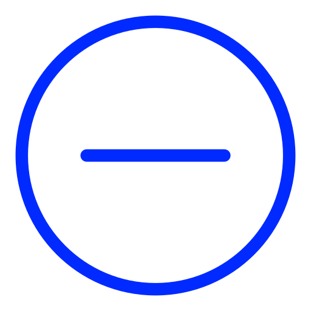

<mat-toolbar class="fxLayout-dark" *ngIf="shareData.userData!== undefined;">
    <div class="fxLayout">
        
        <span>View</span>
    </div>
    <div>
        <div class="button_fx">
            <div class="profile-picture">
                
            </div>
            <button mat-flat-button type="submit" color="basic" class="mat-bt logout" (click)="navigateToLogin()">
                <mat-icon>exit_to_app</mat-icon>
                Logout
            </button>
        </div>
    </div>
</mat-toolbar>

<div class="vote-con">
    <h1>User Profile</h1>
    <div class="item">
        
        <div class="detail">
            <span class="Username">{{userData?.username}}</span>
            <div class="user-info">
                
                <span class="pic_count">{{ imageCount }} รูป</span>
            </div>
            <span class="follow">{{ userData?.email }}</span>
        </div>
    </div>
    <hr style="margin-top: 20px; border: 1px solid #384D6C; border-radius: 20px;">

    <div class="item">
        <div class="user-p">
            
            <span class="pic_co">Picture by {{shareData.userData?.username}}</span>
        </div>
    </div>
    <div class="image_user">
        <div class="container">
            <div class="picvote1" [ngClass]="{'single-image': images.length === 1}">
                <div class="image-wrapper" *ngFor="let image of images">
                    <div *ngFor="let rank of rank" class="image-rank">
                        <div *ngIf="rank.imageID === image.imageID" class="text-container">
                            <div class="arrow-icon">
                                
                                 0" src="../../../../assets/Image/arrow-up.png" />
                                
                            </div>
                            <span class="rank-ud"
                                [ngStyle]="{'color': rank.rankDiff < 0 ? '#FF4500' : (rank.rankDiff > 0 ? '#B0FC38' : 'blue')}">{{rank.rankDiff}}</span>
                        </div>
                    </div>
                    <div class="image-overlay">
                        <i class="material-icons" (click)="navigateChart(image.imageID)">query_stats</i>
                    </div>
                    
                </div>
            </div>
        </div>
    </div>